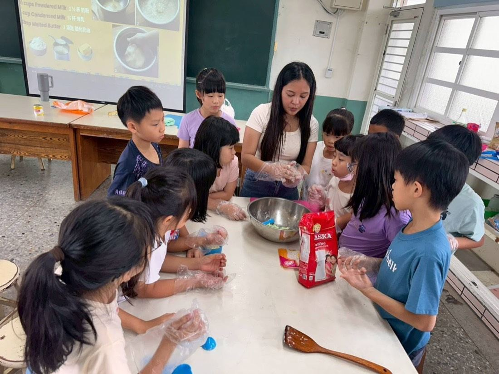
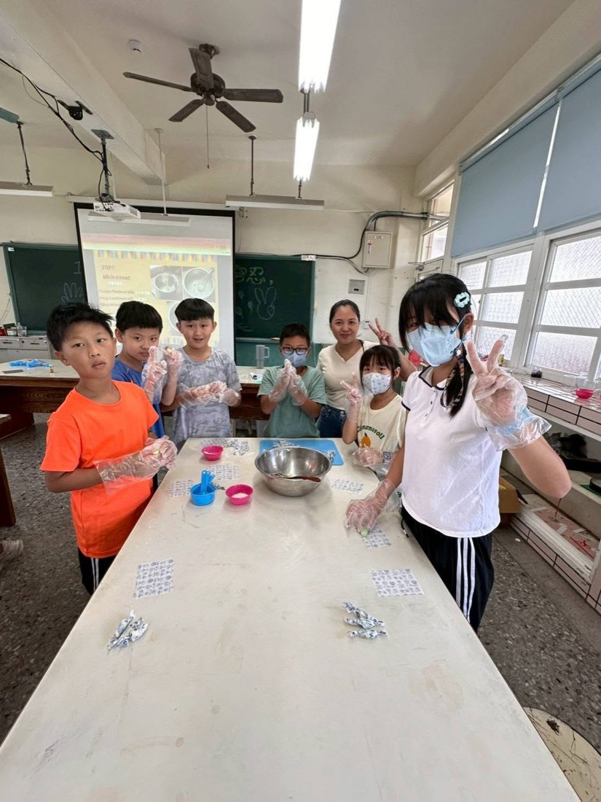
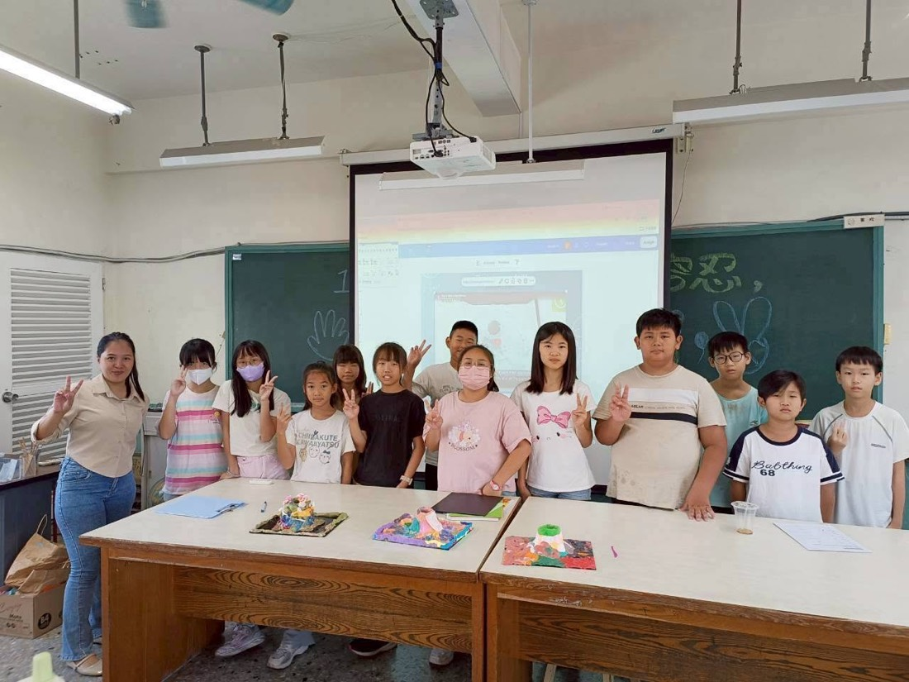
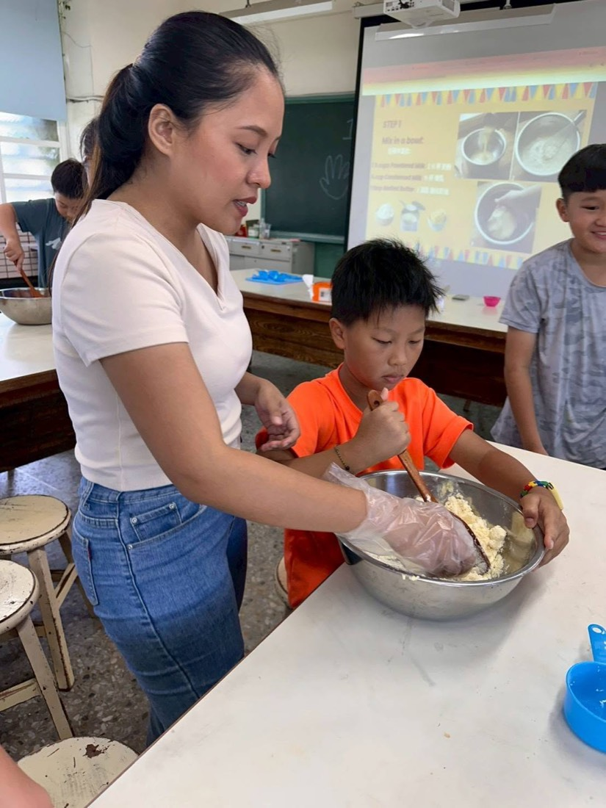
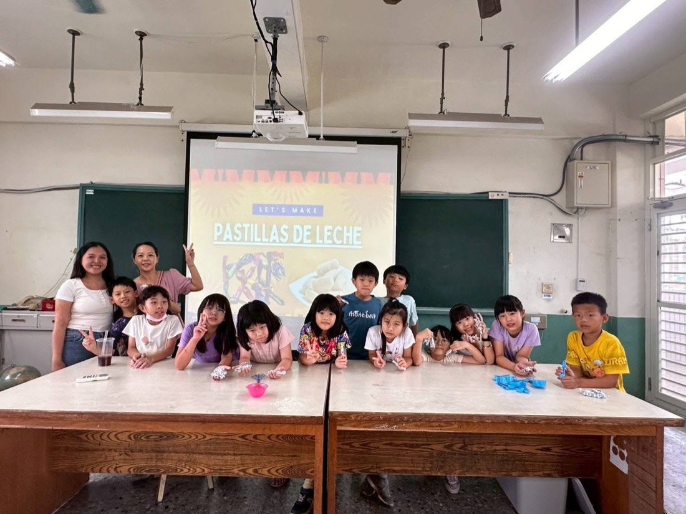

A Six-Day English Summer Camp六天英語夏令營
Our most popular foreign teacher, Ms. Anna, wrapped up a joyful six-day English Summer Camp last Friday. For six days the campus was filled with children's laughter and confident English conversation. Rather than memorizing vocabulary at their desks, students learned English through hands-on, cross-curricular activities: they became little scientists — shaping clay volcanoes and following a chemical "eruption" entirely in English — and even made Pastillas de Leche, a traditional Filipino milk candy, mixing and kneading along to English steps on the screen. Thank you, Ms. Anna, and every enthusiastic camper — keep this curiosity and love of English alive!
上週五，本校最受歡迎的外師 Anna 老師帶領的「六天英語夏令營」圓滿落幕！這六天裡，校園總是充滿孩子們的歡笑聲與自信的英文對話。Anna 老師精心設計了跨領域素養課程，把語言學習融入動手做的體驗：孩子們化身小小科學家，用黏土捏出火山模型，並用全英文理解化學反應；還挑戰製作菲律賓傳統甜點 Pastillas de Leche（牛奶糖），一邊看著投影幕上的英文步驟，一邊親手揉出甜蜜的滋味。謝謝 Anna 老師的用心，也謝謝每一位熱情參與的孩子——在英文學習的路上，繼續保持這份好奇心與熱情！